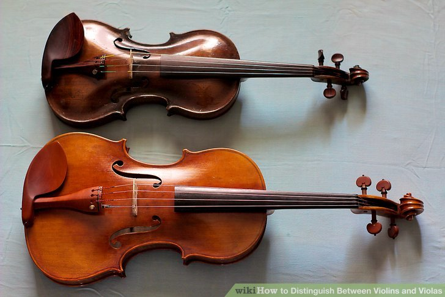

History of the Viola
Facts
Pictures
The technique required for playing a viola has certain differences compared with that of a violin, partly because of its larger size: the notes are spread out farther along the fingerboard and often require different fingerings. The viola's less responsive strings and the heavier bow warrant a somewhat different bowing technique, and a violist has to lean more intensely on the strings.

Viola and a Violin